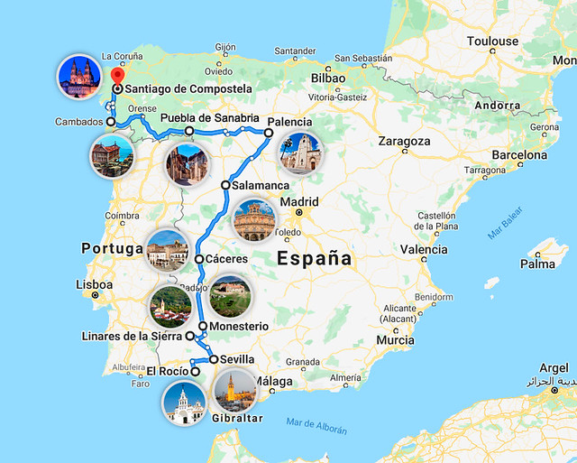

Tarea: crear el itinerario virtual
En esta tarea trazaremos un itinerario con Google Maps formando un recorrido básico de la ciudad que hemos elegido. Incluiremos información general destacando los lugares más emblemáticos o turísticos .

El itinerario virtual será el resultado de un trabajo en grupos de tres o cuatro personas. Cada uno de los componentes deberemos tener tareas claramente asignadas y ser capaces de presentar todo el trabajo realizado.
Hemos dividido la tarea en varios pasos para que sea más fácil organizar el trabajo.
¡Ánimo y a viajar!